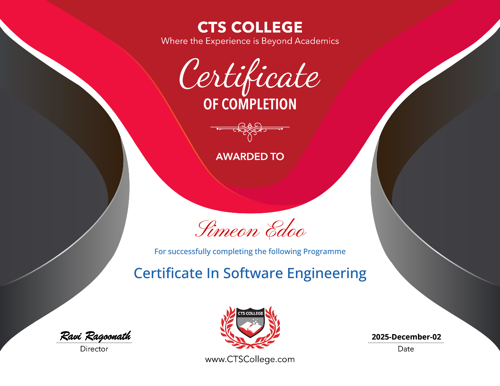

Simeon Edoo
Self-taught developer. I like building straightforward, simple and useful tools, website and more that works well and solves real problems automating life to be for simple and easy.
Cover Letter
SIMEON EDOO
Point Fortin, Trinidad and Tobago | simeonedoo@gmail.com | +1 868 399-1494
Portfolio: https://simeonbio.github.io/aboutme/
Dear Hiring Manager,
I would like to state that I am seeking a job in the field of IT or technical support at your company. I am a proactive person who possesses practical skills in IT support, computer troubleshooting, CCTV installation, technical setup, customer service, web development, and automation. Now, I would like to develop my career in the field of IT and apply my gained skills in a professional IT environment.
I have been fond of technology since I was young, and I always enjoyed figuring out how things operate and solving practical problems in the most effective way. Starting from 2020, I have been working as a freelancer and offering people help in terms of computer setup and troubleshooting, hardware and software problems, and other technical problems.
Moreover, I have first-hand knowledge of CCTV installation and maintenance. It entailed putting up the camera, running and replacing the cables, doing the wiring, setting up the DVR/NVR system, and configuring remote viewing, among other tasks. It is this kind of work that I really love, as it involves a lot of technical knowledge.
From 2025 to 2026, I worked as an Office Administrator for CPM Environmental Services Inc., under Relay and Progress Residential. This position entailed working for five days a week, from 9:00 a.m. to 6:00 p.m., within a dispatching and scheduling office. I was responsible for scheduling the bookings and the service requests as well as communicating with the clients and the services teams.
In addition to my experience, I have certificates in software engineering, web design, Python, Java, database design, networking, and phone and tablet repair. I am also at ease working with HTML, CSS, JavaScript, Python, SQL, APIs, GitHub, Docker, databases, Discord bots, OCR, and automation.
My greatest strength is my method of problem-solving. I am at ease when given an unfamiliar task and spend the time needed to troubleshoot and solve the problem. I am also extremely comfortable dealing with people and communicating technical problems to non-technical users. My experience with customer support, freelancing, technical coordination, and public speaking has helped me in this area.
I would appreciate the opportunity to be able to apply all my skills in programming and readiness to learn to your company. I am very much interested in starting my career in the sphere of Information Technologies and would be happy to start learning and developing in your company.
Thank you for considering my application. It would be an honor for me to discuss all my experience with you.
Sincerely,
Simeon Edoo
Resume
SIMEON EDOO
Point Fortin, Trinidad and Tobago | simeonedoo@gmail.com | +1 868 399-1494
Portfolio: https://simeonbio.github.io/aboutme/
PROFESSIONAL SUMMARY
Resourceful and hands-on IT technician and technical support specialist who has practical experience with computer repairs, CCTV installation, customer support, web development, automation, and systems setups. Comfortable with hardware and software, learning new systems quickly, and finding solutions to technical problems. Good communicator with practical experience with customer support, job coordination, system management, and public speaking. Seeking a career in IT with a focus on technical support and systems.
TECHNICAL SKILLS
Computer Programming & Web Development: HTML, CSS, JavaScript, Python, SQL
Development & Automation: APIs, GitHub, Docker, Discord bot making, Optical Character Recognition (OCR), workflow automation
IT Support: Computer setup, computer troubleshooting, system configurations, basics of networking
Hardware: Desktop/Laptop Repair, PC Troubleshooting, Mobile Device Repair, CCTV Installation/Maintenance
Productivity Software: Microsoft Excel, Word, PowerPoint, Google Docs and other productivity software
PROFESSIONAL EXPERIENCE
Office Administrator | CPM Environmental Services Inc. / Relay / Progress Residential | 2025-2026
• Worked five days a week in a part-time position from 9:00 a.m. to 6:00 p.m. in the office to provide support in dispatch, scheduling, and administration.
• Schedules and books appointments for pest control services and coordinates information about the job between the customer, technician, and dispatch.
• Updates and uploads job information and closes the job on the online portal and through the process.
• Managed customer and service requests by keeping track of job information and scheduling the job.
• Was comfortable working on different software and learned new processes wherever needed.
Freelance IT & Technical Services | Self-Employed | 2020-Present
• Offer direct assistance with computer setups, troubleshooting, configuration, and support for clients, relatives, and friends.
• Troubleshoot and fix desktop PC and laptop hardware and software problems.
• Install computers and technology for clients, as well as help users solve their day-to-day technical issues.
• Develop websites for clients and online groups using HTML, CSS, JavaScript, APIs, and other technologies.
• Develop automation scripts and software programs that minimize repetitive tasks.
• Solve unknown technical challenges through research and experimentation.
Technical Services | Installation of CCTV System | Freelance | 2022-Present
• Perform installation and maintenance services for CCTV systems mostly to residential clients; around 15 jobs have been completed.
• Perform installation of systems including camera installation, cabling, wiring, replacement, configuration, and system installation.
• Configure the DVR/NVR system, recording, remote viewing, and other networking tasks.
• Identify issues related to camera, wiring, connectivity, and recording; perform repairing or replacement as needed.
• Interact directly with the homeowners to assess their requirements, explain the system, and fix the issues.
Technical Coordinator | Trinidad Erin Christadelphian Church | 2020-Present
• Oversee technical aspects of weekly virtual service, Bible study classes, and Zoom meetings.
• Set up and fix any problems with audio, video, computer, online meeting, and other associated technology.
• Give technical support to speakers and attendees when needed.
• Coordinate technical needs to facilitate smooth running of services and meetings.
AC Cleaning and Maintenance | Informal/Family and Friends | Extra Experience
• Handle the task of cleaning and basic maintenance of ACs, which involves dismantling, cleaning, scraping, and rectifying the problems faced while operating them.
• Learn troubleshooting skills through hands-on experience with equipment.
SELECTED PROJECTS
DPSReport - Automatic OCR Report Generator | Personal Project |
• Developed a tool using OCR technology which pulls player name and damage statistics from images and processes them automatically.
• Strips out unnecessary information, sorts players by damage, uses a set number of characters, and then copies the processed report to the clipboard.
• Made the process in order to save time on typing up multiple player reports.
• Technologies used: HTML, CSS, JS, OCR processing, API, automation, and clipboard management.
PremiumEntertainment - Digital Media Site | Personal / Side Business |
• Created and managed a digital media website for home entertainment and TV service promotions.
EDUCATION & CERTIFICATIONS
• CSEC / O-Level Education – Math, English, Biology, Chemistry, Physics, and Information Technology.
• Software Engineering Certificate – Software development concepts, programming, databases, web design, APIs, software engineering, problem solving, and application development.
• Phone and Tablet Repair Certificate – Diagnostics and troubleshooting skills for hardware.
• Web Design Certificate – HTML coding and layout design.
• Database Design Fundamentals Certificate – Concept of entity relationships and how to structure queries.
• Java Fundamentals Certificate – Object oriented programming and syntax of Java.
• Python Fundamentals Certificate – Programming, handling of data and automation.
• Network Fundamentals Certificate – Concepts and principles of network.
• Plans on getting an IT related degree and professional development in technology field.
LEADERSHIP & COMMUNICATION
• Skilled in public speaking and giving presentations and talks to communities and churches.
• Able to plan and lead activities within the church community and interact with people of all kinds.
• Effective in interpersonal communication and skilled in presenting technical information to non-technical people.
• Prefect at St. Benedict’s College, where I ensured discipline, mentoring, students’ interaction with each other, organizing events, and developing the students.
• Prefect at Cap-de-Ville Primary School, where I helped teachers in class activities and management and motivated students to work in collaboration.
ADDITIONAL STRENGTHS
• Excellent problem-solving and practical reasoning skills
• Resourceful and hands-on attitude towards novel problems
• Quick learner with no difficulty understanding new systems and technology
• Excellent customer service and communication skills
• Capable of working individually or as part of a team
• High interest in automation and using technology to simplify mundane work
• AI & Automation: The application of AI as a practical tool that enables one to work smarter and become more efficient. Applying AI in the process of research, problem solving, development and other routine tasks, however, without ceasing to apply my own judgment and understanding of things.
REFERENCES
Mr. Anthony Lee-Fu
Teacher
379-8589
Mr. John Samuel Edwards
Retired Director, Human Resources, Ministry of National Security
395-6316
View Certificates


